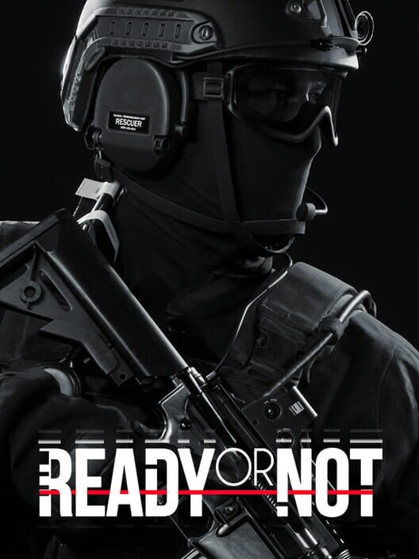

Ready or Not
Ready or Not
Details
|  | |
| Playtime | 18h 51m 0s |
| Last Activity | 12/18/2024 1:30:24 |
| Added | 4/24/2025 1:29:48 |
| Modified | 5/1/2025 23:28:55 |
| Completion Status | Played |
| Library | Steam |
| Source | Steam |
| Platform | $PC (Windows) |
| Release Date | 12/13/2023 |
| Community Score | 88 |
| Critic Score | 79 |
| User Score | |
| Genre | Action Adventure Indie |
| Developer | VOID Interactive |
| Publisher | VOID Interactive |
| Feature | Achievements Cloud Saves Co-Op Full Controller Support Multiplayer Online Co-Op Single Player |
| Links | Community Hub Discussions Guides News Store Page PCGamingWiki Achievements |
| Tag | Action America Atmospheric Combat Co-op Co-op Campaign Crime First-Person FPS Gore Gun Customization Horror Modern Multiplayer Psychological Horror Realistic Shooter Singleplayer Tactical Violent |
Description

Be sure to join the Ready or Not Discord server to keep up with the latest updates, find recruits for your squad, and have a good time!
Los Sueños
- The LSPD reports a massive upsurge in violent crime across the greater Los Sueños area. Special Weapons and Tactics (SWAT) teams have been dispatched to respond to various scenes involving high-risk hostage situations, active bomb threats, barricaded suspects, and other criminal activities. Citizens are being advised to practice caution when traveling the city or to stay at home.
It has been noted that while Los Sueños is still seen as a city where riches can be found, for many more the finer things in life are becoming less and less obtainable. “The city is sprawling with cramped high-rise apartments and decaying affordable housing, which has been exploited by the criminal underground like a malevolent parasite,” states Chief Galo Álvarez. “In a city where people are just trying to survive, lawful action from the LSPD and the LSPD SWAT team remains an integral force preventing the stretched thin social fabric in this city from snapping under this chaotic strain.”
In response to the burgeoning violent crime wave inundating Los Sueños, Chief Álvarez of the LSPD has enlisted the stalwart support of David ‘Judge’ Beaumont as the Commander of the LSPD SWAT team. Shortly following this announcement, the LSPD has also confirmed active recruitment for additional talent to join this specialized tactical police unit with the mission of bringing peace back to the city.
“This assignment is not for the faint of heart,” comments Commander Beaumont, “Extremists, crooked politicians, countless weapons, human trafficking, and illicit drugs and pornography… the world of policing in Los Sueños is fraught with real and harsh realities, realities that the everyday person isn’t necessarily confronted with. These are realities that you will need to navigate with your team within the proper bounds of the law or face the consequences and make matters worse.”
The Los Sueños Policed Department has officially posted new details on Commander “Judge” Beaumont’s updated assignment with the LSPD SWAT team:
New Expectations:
Whether this is your first time in Los Sueños or not, the city has changed and so too have the tools and methods with which we conduct our work. The haunts you might have seen or heard about are re-imagined, and so have the angles with which we approach each call. Furthermore, we’ve received reports that identify at least 4 new high-risk police districts which we suspect may require future tactical intervention, plus at least 4 existing high-risk districts that underwent massive upheavals.

Take Command:
The role of the Commander of the LSPD SWAT is to compose their team from a large roster with unique talents, give tactical orders, meticulously plan, and carry out missions. Commanders are obligated to conduct each mission with integrity and look after their team’s mental and physical health. Officers with unaddressed deteriorating mental status may be unable to properly perform their duties or even feel compelled to quit the force. Incapacitated officers may be temporarily unavailable for missions, with the tragic prospect of death leading to a permanent loss. For SWAT Commanders in unusual circumstances based on individual choices they opt for, deadly mistakes may lead to their own permanent fatality.

SWAT Team Quality Enhancement:
Much anticipated improved SWAT training procedures, tactics, and experience in the LSPD has led to an overall increase in the quality and quantity of officers in our roster. Expanded tactical versatility allows our officers to take on any challenge with renewed confidence, blending coordination and independence seamlessly. There is also additional basic training now available to SWAT members to keep foundational knowledge and muscle memory in top shape.

Equipment and customization:
We have access to the best weapons and equipment that the LSPD can offer to fulfill our exceptionally dangerous role, including many new acquisitions. However, customization isn’t limited to the equipment we use. Through close-knit comradery while performing remarkable actions alongside the team, you’ll earn the clothes you wear, the patches on your sleeves, the artwork that may adorn your skin, and potentially even the timepiece on your wrist. Lastly, we have overhauled our headquarters' training facilities to better test our loadouts before heading out on call.